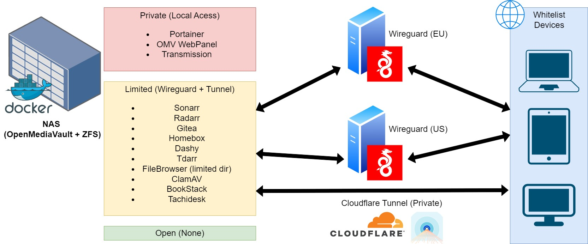

The all application is running on Docker Container. All docker are managed by using Portainer. Some Docker can be access by Wireguard Tunnel or by Cloudflare Tunnel. This ensure we can access the application everywhere. Only whitelisted devicess/account can access certain docker application. There are more application but not listed or actively used